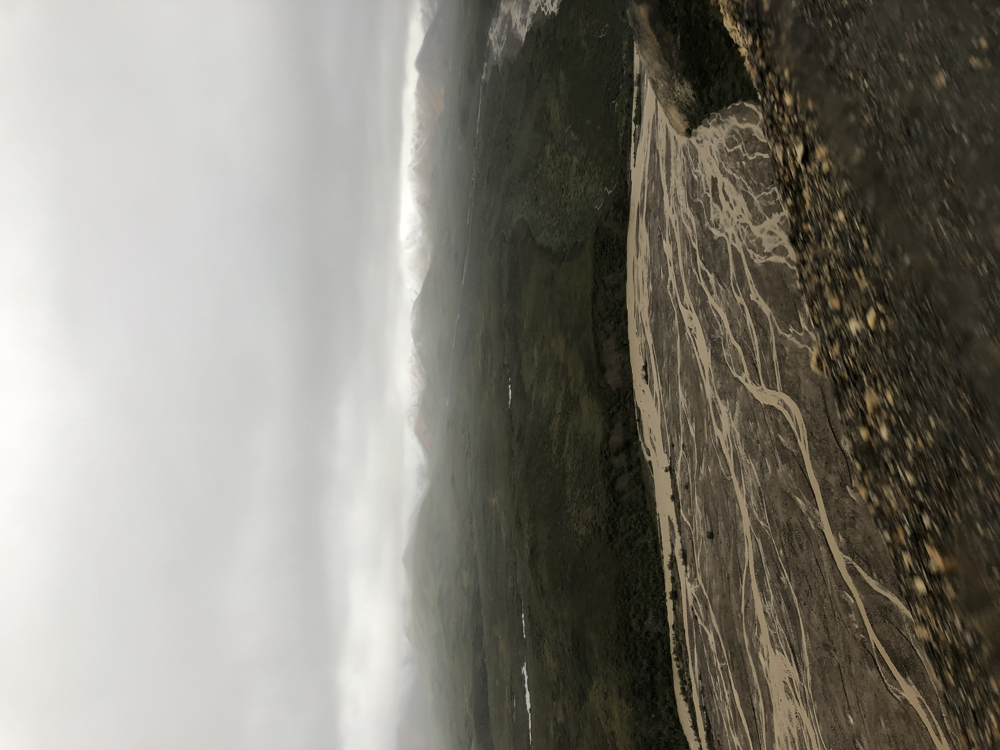

Home
Sitemap
About the author
Contact
Home
Sitemap
About the author
Contact
| Location Name | Location Highlight |
|---|---|
| Anchorage | The amazing seafood! |
| Denali National Park & Preserve | The view and wildlife you can see from the mountain! |
| Glacier Bay | The beautiful glacier formations! |
Anchorage, Alaska is a must see spot in Alaska. One of the vibrant downtown areas where visitors can purchase souvenirs as well as try some of the great seafood available.The picture shows a overhead landscape of Anchorage, Alaska that I took while up on a hill. The food picture shows some of the dishes I had while at the famous Glacier Brewhouse restaurant which is a must try spot! I have included a google maps of the restaurant location in Anchorage, Alaska.


Denali National Park & Reserve is one of the most popular tourist destinations. Denali is one of the tallest mountains in the world and on a non-foggy day the park has a spectacular view of the peak of the mountain. At the national park, visitors have the opportunity to sightsee in their buses. They take visitors along the base of the mountain which provides ample chances to take pictures of the wildlife such as bears and mouse. While up along the mountain you can see specks of white which are actually the mountain goats! If you go into the parks base you can get the chance to take pictures with husky dogs which have been trained for dog sledding. They have various shows throughout the day to showcase the sled routine.

While in Alaska, one of the great sights to see are the glaciers! At Glacier Bay, you get the chance to see some of the larger remnants of the glaciers, however, as global warming has impacted the environment it is noticeable how much smaller the glacier is compared to historical images. The first image below was taken in 2019 of the Tarr Inlet when I went and the one below that was the Tarr Inlet in 2015.